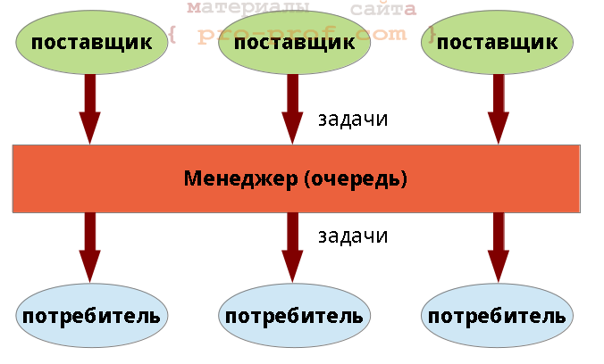
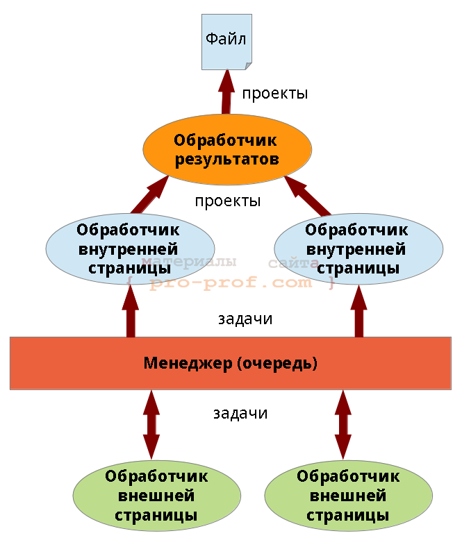

В последнее время часто встречал вопросы о получении данных с сайта на С++, поэтому решил написать статью, посвященную этой теме.
В качестве примера статьи рассмотрена задача получения бесплатных проектов с одного фриланс-сайта [1]. На этом сайте, есть страница со списком проектов, на которой есть их (проектов) частичное описание и ссылка на страницу проекта, но наша задача — получить полное описание (оно есть на странице проекта).
В статье описаны:
реализация шаблона producer/consumer в задаче получения и обработки веб-страниц.
Шаблон проектирования «поставщик/потребитель»
Шаблон «поставщик/потребитель» — шаблон параллельного программирования, нем принимают участие:
На каждую задачу можно было бы создать по отдельному потребителю (потоку), однако, это эффективное решение — лучше, количество потоков должно совпадать с числом ядер процессора. Эту проблему и решает шаблон producer/consumer.
Суть шаблона заключается в том, что каждый поставщик и потребитель работает в отдельном потоке. Поставщики помещают задачи в очередь, а не занятые потребители вытаскивают их и выполняют. Очень схематично это показано на рис.1.

Реализация может быть самой различной, например, может не выделяться явно класс «задача». Возможны вариации на тему «очереди» — это может быть как объект, работающий в отдельном потоке, так и очередь в разделяемой памяти, охраняемая мьютексом.
В некоторых реализациях менеджер может управлять последовательностью выполнения задач, например, если они имеют приоритеты или задачи связаны между собой. В этом случае менеджер хранит информацию не только о задачах, но и о потребителях.
Родственные паттерны. Если мы перестанем задумываться откуда поступают данные (забудем о поставщиках) — то придем к шаблону Thread Pool (пул потоков). Если в пуле потоков будет лишь один поток — шаблон будет называться Worker Thread (рабочий поток).
Загрузка страницы
Для загрузки страницы в Qt4 использовался класс QHttp, однако, он готовится к удалению и вQt5 оставлен для совместимости в отдельном модуле — его использовать сейчас не стоит и мы его не коснёмся.
Загрузку страниц в Qt, в принципе, можно производить с помощью классов QWebView иQWebPage. Оба класса очень объёмны и предназначены для отрисовки содержимого страницы — первый из них представляет собой почти полноценный веб-браузер. Эти классы могут быть полезны и в других случаях (когда отрисовка не требуется), т.к. представляют страницу в видеDOM (Document Object Model), позволяет выполнить JavaScript, размещенный на странице и еще много всего. В связи с тем, что их основной функционал в нашем случае не нужен — не будем ими пользоваться (тем более эти классы связаны с GUI, поэтому не могут работать в отдельном потоке).
Для загрузки страниц в Qt5 используется класс QNetworkAccessManager, в частности, он позволяет отправлять POST- и GET-запросы. Помимо QNetworkAccessManager используются классы QNetworkRequest (запрос к сайту) и QNetworkReply (ответ сервера).
Пример запроса страницы приведен на листинг 1.
листинг 1 пример запроса страницы
01
02
03
04
05
06
07
08
09
10
11
12
13
14
15
16
17
18
19
20
21
22
23
24
25
26
27
28
29
30 |
class PageHandler : public QObject { //...
public: explicit PageHandler(QObject *parent = 0); public slots: void on_page(QObject*, TaskType, QString); //!< страница запрошена private slots: void on_load(QNetworkReply*); //!< обработка сигнала finished QNetworkAccessManager protected: QNetworkAccessManager *m_nam; //!< менеджер загрузки страниц //...
};
PageHandler::PageHandler(QObject *parent) :
QObject(parent), m_nam(new QNetworkAccessManager(this)) { connect(m_nam, SIGNAL(finished(QNetworkReply*)), SLOT(on_load(QNetworkReply*))); }
void PageHandler::on_load(QNetworkReply *reply) { // обработка ответа сервера }
void PageHandler::on_page(QString url) { QNetworkRequest req(url); req.setHeader(QNetworkRequest::ContentTypeHeader, QVariant("text/plain")); m_nam->post(req, ""); } |
В 27 строке создается экземпляр класса QNetworkRequest, в 29 строке — отправляется POST-запрос. Метод post() возвращает указатель на QNetworkReply, который будет содержать ответ сервера после того, как QNetworkAccessManager выработает сигнал finished(QNetworkReply*). Результат вызова post() можно не сохранять, т.к. сигнал finished(QNetworkReply*) несет тот же указатель. Обработка страницы в примере осуществляется в слоте on_load(QNetworkReply *reply), с которым в 19 строке соединен соответствующий сигнал.
При обработке страницы удобно использовать регулярные выражения (QRegExp), но в нашей простой задаче это будет излишним. QNetworkReply::readAll() возвращает содержимое страницы в виде QByteArray.
QByteArray позволяет найти первое вхождение подстроки при помощи метода indexOf(),который гораздо проще (в реализации) регулярных выражений и в нашем случае гораздо эффективнее.
На листинг 2 приведен фрагмент слота on_load, в котором осуществляется поиск ссылок на бесплатные проекты. В методе on_load() намеренно написан некрасивый switch — на этом примере я надеюсь в будущем описать делегирование в C++, а именно, шаблон проектирования «Состояние» (State).
листинг 2 пример обработки страницы
01
02
03
04
05
06
07
08
09
10
11
12
13
14
15
16
17
18
19
20
21
22
23
24
25
26
27
28
29
30
31 |
void PageHandler::on_load(QNetworkReply *reply) { QByteArray buff = reply->readAll(); qint16 idx = 0, start = -1, finish = -1;
switch (m_pageType) { case TaskType::External: { QString patProjStart = "<div class=\"proj public\" >", patAddrStart = "<a class=\"ptitle\" href=\"", patAddrFinish = "\""; for (;;) { idx = buff.indexOf(patProjStart, idx); if (idx < 0) break; idx = idx + patProjStart.length();
idx = buff.indexOf(patAddrStart, idx); Q_ASSERT(idx > 0); idx = start = idx + patAddrStart.length();
idx = buff.indexOf(patAddrFinish, idx); Q_ASSERT(idx > 0); finish = idx;
//qDebug() << m_host + buff.mid(start, finish - start); } } break; // ... } //... delete reply; } |
Обратите внимание на 31 строку — если из под ответа сервера не освободить память в обработчике сигнала finished(QNetworkReply*) — произойдет утечка (ведь указатель мы нигде не сохраняли).
Потоки в Qt
Для работы с потоками в Qt применяется класс QThread, есть 2 варианта порождения потоков с его помощью:
В статье используется второй подход.
Отмечу, что в Qt потоки можно создавать и без использования QThread напрямую — для этого существуют классы QtConcurrent и QThreadPool, описание которых не вошло в статью.
На листинг 3 приведена главная функция программы, порождающая 5 потоков с экземплярами класса PageHandler — обработчиками страниц.
листинг 3 главная функция - порождение потоков
01
02
03
04
05
06
07
08
09
10
11
12
13
14
15
16
17
18
19
20
21
22
23
24
25
26
27
28
29
30 |
int main(int argc, char **argv) { QApplication a(argc, argv);
qRegisterMetaType<TaskType>("TaskType");
ResultDriver driver("results.txt"); TaskManager manager;
for (int i = 0; i < 5; ++i) { QThread *handlerThread = new QThread(&manager); PageHandler *handler = new PageHandler("http://freelance.ru");
QObject::connect(handlerThread, SIGNAL(finished()), handler, SLOT(deleteLater())); QObject::connect(handler, SIGNAL(project(QString)), &driver, SLOT(on_project(QString)));
handler->moveToThread(handlerThread); handlerThread->start();
manager.addHandler(handler, handlerThread); }
QObject::connect(&manager, SIGNAL(finished()), &driver, SLOT(saveAll())); QObject::connect(&driver, SIGNAL(finished()), &a, SLOT(quit()));
manager.addTask(TaskType::External, "http://freelance.ru/projects/?cat=4&spec=108");
return a.exec(); } |
Я пока что не описывал из каких частей состоит наша программа, а теперь должен пояснить.TaskManager отвечает за хранение списка задач (Task) по обработчикам (PageHandler).Каждый обработчик работает в отдельном потоке.
Потоки порождаются в 10 строке, при этом в качестве родительского объекта у них указывается менеджер задач (при уничтожении менеджера будут убиты все потоки). Каждый объект соединяется с менеджером соответствующими сигналами и слотами (строки 13-16). В18 строке обработчик перемещается в отдельный поток, а в 19 строке поток запускается.
При взаимодействии обработчиков с менеджером через механизм сигналов и слотов передаются задачи, т.к. они не являются стандартным типом Qt — должны быть зарегистрированы вызовомqRegisterMetaType (4 строка).
Для того, чтобы потоки корректно завершили работу необходим последовательный вызов методов QThread::quit() и QThread::wait() — первый просит поток завершиться, а второй — ждет завершения. Остановкой потоков занимается TaskManager, поэтому помимо списка обработчиков он должен хранить список потоков. В 27 строке метод TaskManager::addtask())принимает соответствующие указатели. На листинг 4 приведен код остановки потоков.
листинг 4 остановка потоков
1
2
3
4
5
6 |
TaskManager::~TaskManager() {
for (QThread *thread : m_threads) { thread->quit(); thread->wait(); } } |
Реализация
Достаточно грубо архитектура приложения показана на рис. 2. Стрелками показаны потоки данных, передаваемые между объектами программы. Ключевое отличие от рис. 1 заключается в том, что поставщики данных, являются и потребителями.

Поставщики и потребители, вообще не являются экземплярами разных классов, они получают задачу и в зависимости от ее типа выполняют те или иные действия (в одной из следующих статей я покажу как сделать эту систему более гибкой и красивой за счет применения шаблона проектирования «состояние» (State)).
Конфликтов при обращении исполнителей к очереди не возникает, т.к. очередь обрабатывается в отдельном потоке. Потребители и поставщики могут посылать очереди сигналы, которые по умолчанию являются синхронными (обработка синхронных сигналов в Qt такова, что каждый объект имеет очередь сигналов, которые обрабатываются последовательно — гарантируется, что сигнал, принятый раньше будет обработан первым).
Аналогичным образом происходит работа с файлом — писать в файл может лишь один объект — «обработчик результатов» (рис.2). Если бы мы не ввели такой объект — потоки начали бы конкурировать за файл, пришлось бы вводить мьютексы (или что-то подобное).
Я не буду приводить описания классов задачи, менеджера и обработчика результатов, т.к. они весьма тривиальны. Вместо этого прикреплю файл с проектом: Парсер freelance[Qt] (исходный код)
Отмечу лишь то, что менеджер помимо указателя на поставщика/потребителя должен хранить его состояние — поэтому введен дополнительный класс TaskManagerHandler (состояние обработчика с точки зрения менеджера). Дело в том, что состояние обработчика может измениться, но менеджер не узнает об этом мгновенно — он изменит состояние лишь после получения соответствующего сигнала (и лишь после этого будет принимать решение о загрузке потока новыми задачами).
Список использованных источников